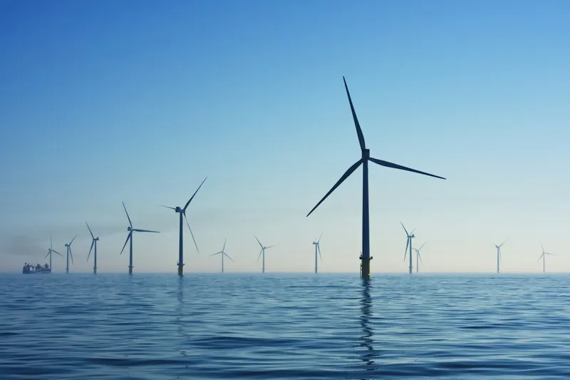
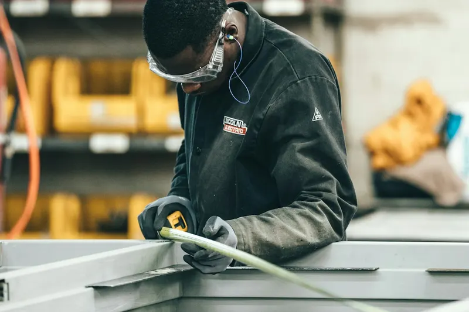

Construction métallique et chaudronnerie
Poutres, portiques, mezzanines, escaliers, châssis et réservoirs adaptés aux dimensions de notre cabine, avec une protection choisie selon leur environnement d’utilisation.
Peinture en poudre pour les entreprises de Biscaye
Legutio se situe à 35 minutes de Durango et à moins d’une heure de Bilbao. Nous thermolaquons des structures, des ensembles de chaudronnerie et des pièces destinées à l’industrie de Biscaye. Devis ferme sous 24 h, délai habituel d’une semaine.

La Biscaye compte des entreprises de construction métallique et de chaudronnerie, de biens d’équipement, d’énergie éolienne, de construction navale et d’activités portuaires. Dans le Durangaldea, la forge et les composants industriels sont également bien représentés.
Il s’agit de grandes pièces et d’ensembles soudés souvent destinés à l’extérieur, près de l’estuaire ou de la mer. Notre cabine accepte des pièces mesurant jusqu’à 6 m de long et pesant jusqu’à 165 kg.
Poutres, portiques, mezzanines, escaliers, châssis et réservoirs adaptés aux dimensions de notre cabine, avec une protection choisie selon leur environnement d’utilisation.
Supports, capotages, coffrets, armoires et structures auxiliaires destinés à l’éolien, à l’électricité et aux machines industrielles.
Garde-corps, clôtures, claustras et escaliers en acier, acier galvanisé ou aluminium.
Pour qui nous peignons, bassin par bassin :
 Charpente métalliquePoutres, portiques, treillis et mezzanines, jusqu’à 6 m de long.
Charpente métalliquePoutres, portiques, treillis et mezzanines, jusqu’à 6 m de long.
Énergie et éolienSupports, armoires et structures auxiliaires destinés à l’extérieur. Chaudronnerie et serrurerieEnsembles soudés, garde-corps, clôtures et tubes.
Chaudronnerie et serrurerieEnsembles soudés, garde-corps, clôtures et tubes.
Menuiserie métalliqueProfilés et cadres en acier et aluminium pour fermetures.Distances routières approximatives depuis notre atelier de Legutio :
Selon l’ISO 12944-2, les zones industrielles humides et les côtes à salinité modérée peuvent relever de la catégorie C4 ; les environnements portuaires et le front de mer peuvent atteindre C5.
Pour les structures extérieures du Grand Bilbao, du port ou du littoral, nous recommandons un primaire riche en zinc et une finition polyester : notre système C4-H, dont la certification est en cours. Si la pièce est déjà galvanisée, nous appliquons la peinture sur le zinc après un prétraitement adapté.
Non. Les pièces se déposent et se récupèrent dans notre usine de Legutio (C/ San Bartolomé 11, Pol. Ind. Goiain), avec votre propre véhicule ou le transporteur de votre choix. Le transport n’est pas inclus ; si vous en avez besoin, nous l’étudions au cas par cas. Horaires : du lundi au vendredi, de 7 h à 15 h.
Le délai habituel est d’une semaine à compter de la réception des pièces à l’atelier. Nous vous envoyons auparavant un devis ferme en moins de 24 heures ouvrées.
Jusqu’à 6 m de long, 2 m de haut et 0,65 m de large, pour un poids maximal de 165 kg par pièce. Si votre pièce dépasse ces limites, consultez-nous.
Oui. C’est un système duplex associant galvanisation et peinture en poudre. L’acier galvanisé exige un prétraitement spécifique pour assurer l’adhérence du revêtement et éviter les porosités. Nous expliquons ce procédé sur notre page consacrée à l’acier galvanisé.
 Thermolaquage de pièces et structures
Peinture en poudre époxy, polyester ou époxy-polyester sur acier, acier galvanisé et aluminium, des petites pièces aux grands formats. Toutes les teintes RAL ; Pantone et NCS sur demande. Finitions lisses, finement texturées ou gaufrées, du mat au brillant, avec options métallisées et nacrées.
Thermolaquage de pièces et structures
Peinture en poudre époxy, polyester ou époxy-polyester sur acier, acier galvanisé et aluminium, des petites pièces aux grands formats. Toutes les teintes RAL ; Pantone et NCS sur demande. Finitions lisses, finement texturées ou gaufrées, du mat au brillant, avec options métallisées et nacrées.
 Primaire riche en zinc
Une alternative à la galvanisation ou à l’électrozingage : un primaire riche en zinc protège l’acier, recouvert d’une finition en poudre. Système anticorrosion C4-H, certification en cours d’obtention.
Primaire riche en zinc
Une alternative à la galvanisation ou à l’électrozingage : un primaire riche en zinc protège l’acier, recouvert d’une finition en poudre. Système anticorrosion C4-H, certification en cours d’obtention.
 Thermolaquage de profilés aluminium
Profilés dans la couleur et la finition voulues, avec la même ligne et le même contrôle.
Thermolaquage de profilés aluminium
Profilés dans la couleur et la finition voulues, avec la même ligne et le même contrôle.
 Thermolaquage sur acier galvanisé
Dégazage et préparation spécifiques pour éviter piqûres et cloques : système duplex zinc et peinture poudre.
Thermolaquage sur acier galvanisé
Dégazage et préparation spécifiques pour éviter piqûres et cloques : système duplex zinc et peinture poudre.
 Gravure laser et impression UV
Gravure laser, impression UV en relief, tampographie et sérigraphie : logos, références et indications sur la pièce.
Gravure laser et impression UV
Gravure laser, impression UV en relief, tampographie et sérigraphie : logos, références et indications sur la pièce.
Ferme et écrit, en moins de 24 heures ouvrées. Vous pouvez aussi nous appeler.